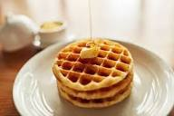

Waffle

Description
A waffle is a dish made from leavened batter or dough that is cooked between two plates.
that are patterned to give a characteristic size, shape, and surface impression.
Ingredients
Steps
- Preheat iron to desired temperature.
- Mix flour, salt, baking powder, and sugar
- Beat eggs, stir in milk and batter.
- Laddle into waffle iron, cook till golden brown.